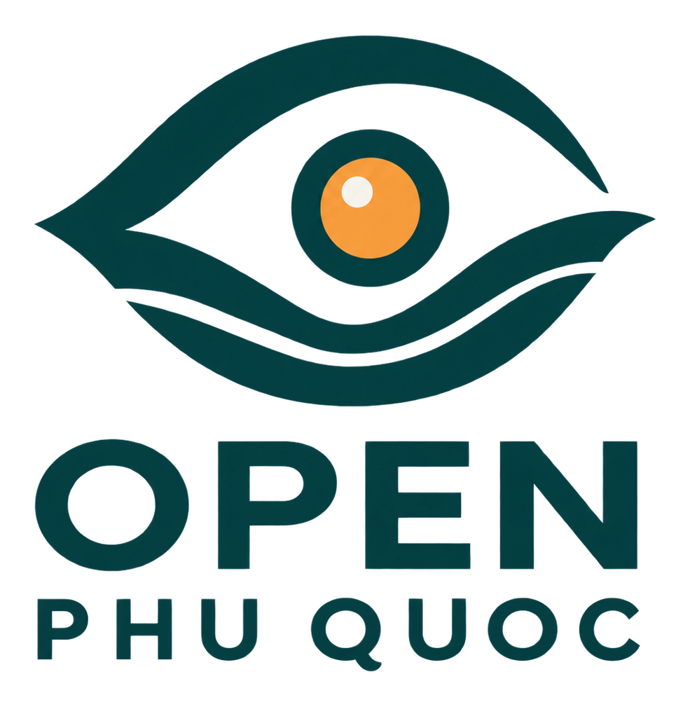

TỐI NAY
Sunset Town đẹp hơn khi nắng dịu xuống.
Demo: ánh sáng bến cảng, hoàng hôn và khung giờ show khiến từ 17:00 trở đi đáng để ghé hơn.
Xem kế hoạch tối nay →


OPEN PHU QUOC
Xem hôm nay đảo đang thế nào, có gì đang diễn ra, nên đi đâu và những điều cần biết trước khi lên đường.
Ảnh dùng thử · Wikimedia Commons
CÓ GÌ HÔM NAY
Demo: ánh sáng bến cảng, hoàng hôn và khung giờ show khiến từ 17:00 trở đi đáng để ghé hơn.
Xem kế hoạch tối nay →HÔM NAY ĐI ĐÂU
KHÔNG NÊN BỎ LỠ
GỢI Ý TỪ OPEN PHU QUOC
Phú Quốc thay đổi theo từng giờ, từng bờ biển và thời tiết.KHÁM PHÁ THEO KHU VỰC
ĂN GÌ Ở PHÚ QUỐC
CẦN LÀ CÓ
DI SẢN & CHẤT ĐẢO
Những thứ làm nên mùi, vị và ký ức của đảo - nghề biển, nước mắm, hồ tiêu và những câu chuyện địa phương.
HIỂU PHÚ QUỐC NHANH